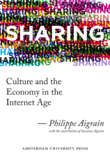

LA QUADRATURE DU NET
Internet et Libertés
Présidentielles 2017 : changer de méthode pour changer de cap
- general
- communiqué
- OpEd
Paris, 21 avril 2017 — La campagne électorale française donne peu de satisfaction depuis des mois. Entre affaires, discours sécuritaire et coups bas, la politique au sens noble du terme a peu de place, les propositions positives sont quasiment absentes. Dans sa volonté d'action positive et de long terme, La Quadrature du Net s'associe avec d'autres organisations couvrant une large part du champ social pour remettre au coeur du débat public les idées de transformation sociale et politique que nous portons depuis des années. Avec Aides, Greenpeace, la Cimade et la Ligue des droits de l'Homme, nous refusons la résignation actuelle et redisons avec force qu'il faut avancer vers l'universalité, l'effectivité et l'égalité des droits, la dignité des personnes et la solidarité.
Youtube : invisibilisation au profit de la publicité
- censure et filtrage du Net
- général
- liberté d'expression
- OpEd
La Quadrature du Net publie ici une tribune de Okhin. Paris, 5 avril 2017 — Les plateformes de vidéos en ligne (Youtube et Facebook en tête) supplantent maintenant la télévision en nombre d'audiences, rendant ces médias extrêmement importants dans la représentation de la société qu'ils fournissent. Elles constituent un espace public d'expression, régi par des sociétés privées, et permettant à de nombreuses personnes, cultures, sous-cultures, groupes sociaux d'exister, d'échanger et d'être vus. Il existe bien entendu des initiatives et des alternatives libres, mais aucune d'entre elles ne peut prétendre à atteindre le niveau de présence de ces plateformes.
État d'urgence : lettre à Bernard Cazeneuve pour une transparence des données
- censure et filtrage du Net
- état d'urgence
- général
- Vie privée - Données personnelles
- Bernard Cazeneuve
- actualité
- communiqué
Paris, 31 mars 2017 — L'état d'urgence est instauré en France depuis le 14 novembre 2015, soit 503 jours. Mais ses effets ne sont pas connus du public, notamment parce que les promesses de transparence qui avaient été faites il y a un an et demi n'ont pas été respectées. Le Parlement a certes effectué un suivi statistique mais bien trop faible pour être utilisable concrètement. Plusieurs associations et organisations de défense des droits humains demandent donc aujourd'hui à Bernard Cazeneuve et au gouvernement français de publier une série de statistiques et de chiffres précis, afin de pouvoir mesurer l'impact de l'état d'urgence sur la société française. L'exercice des droits fondamentaux passe par un contrôle effectif des mesures de restriction des libertés. Puisque le gouvernement lui-même n'a pas été transparent depuis le 14 novembre sur ses actions, il est temps de demander publiquement l'ouverture des données de l'état d'urgence.
Sortir de l'État d'urgence

La Quadrature défend :
- Les droits de l'Homme dans la société numérique
- L'accès à un Internet libre et ouvert
- Le partage de la culture et des connaissances
La Quadrature du Net est une association de défense des droits et libertés des citoyens sur Internet. Lire les propositions de La Quadrature.
Réformons le droit d’auteur !
Après le rejet d'ACTA par le Parlement européen, il est temps d'entamer une réforme positive du droit d'auteur pour l'adapter à l'ère numérique. Plutôt que de réprimer les pratiques culturelles des citoyens, les pouvoirs publics doivent les encourager, et permettre à tous de s'engager dans des activités créatives et de partager la connaissance et la culture en ligne.
À cet égard, la plateforme de propositions de La Quadrature du Net fournit une analyse des principaux enjeux et un ensemble cohérent de propositions, portant sur la réforme du droit d'auteur et du copyright, mais aussi sur les politiques liées en matière de culture et de médias.
Sharing: Culture and the Economy in the Internet Age
Dans son nouveau livre, Sharing, Philippe Aigrain, co-fondateur de La Quadrature du Net, propose un modèle de financement additionnel conçu pour permettre le développement soutenable des activités créatives, dans un contexte où le partage serait reconnu comme un droit.
Sharing est disponible sous forme
- de livre imprimé, disponible mondialement,
- d'eBook, vendu au format ePub,
- de livre électronique en accès libre,
- et un site interactif, http://www.sharing-thebook.com, où vous pourrez commenter les différents chapitres, télécharger le code source et les données utilisées dans le livre, et faire tourner les modèles de financement avec les paramètres de votre choix.
Le rapport « del Castillo » sur le code européen des télécoms, de mal en pis
- European Parliament
- paquet telecom
- spectre radio et fréquences
- Andrus Ansip
- Günther Oettinger
- Pilar del Castillo Vera
- communiqué
Lettre ouverte aux législateurs européens sur les réseaux Internet communautaires
- European Parliament
- paquet telecom
- spectre radio et fréquences
- Andrus Ansip
- Günther Oettinger
- communiqué
Filtrage automatisé des plateformes : La Quadrature envoie ses arguments aux eurodéputés
- censure et filtrage du Net
- contribution créative
- directive copyright
- droit d'auteur
- licence globale
- Andrus Ansip
- Günther Oettinger
- communiqué
ePrivacy arrive au Parlement européen : La Quadrature publie son analyse
- ePrivacy
- Parlement européen
- ie privée - Données personnelles
- In't Veld
- Jan Philipp Albrecht
- Marju Lauristin
- Michal Boni
- analyse
- communiqué
Lettre ouverte internationale des ONG demandant la suspension du Privacy Shield
OUTIL
Descriptif des outils
Wiki
Mémoire Politique
Lawtracks
Mediakit
QuadPad
La Quadrature
OUTIL
Descriptif des outils
Wiki
Mémoire Politique
Lawtracks
Mediakit
QuadPad<
Wiki
tif des outilsMémoire Politique
Lawtracks
Mediakit
QuadPad